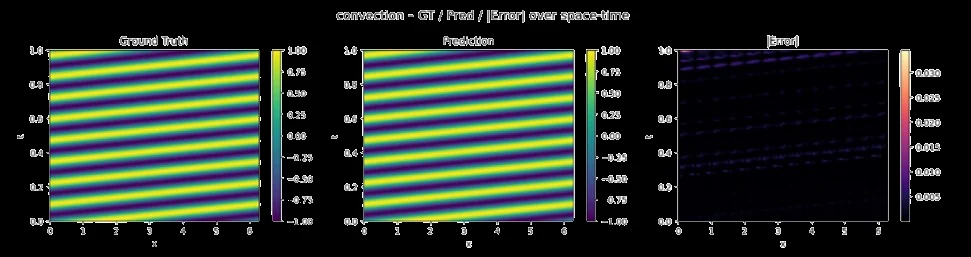
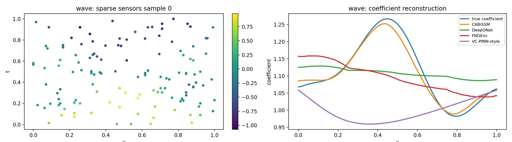

RESEARCH JOURNEY · SCIENTIFIC MACHINE LEARNING
From prediction
to intervention.
Can a neural model do more than approximate a PDE solution? My research explores what it takes to recover hidden physics—and to make reliable predictions when the physical mechanisms themselves change.
One research programme · Three questions
What should a PDE learner understand?
What will happen?
Given the governing equation, learn the evolving solution field.
What caused it?
From sparse sensor observations, recover an unknown PDE coefficient.
What if physics changes?
Predict under unseen interventions on diffusion, advection, and reaction.
01 / RESEARCH · FORWARD PDE LEARNING
Global interaction.
Ordered propagation.
Physics constrained.
TransSSM combines Transformer attention with a state-space branch in a physics-informed architecture. It was tested on reaction, convection, wave and Navier–Stokes benchmarks.
ℒ = λresℒres + λICℒIC + λBCℒBC
The model learns PDE solutions by combining residual, initial-condition and boundary-condition losses.

Compare solution accuracy
Choose a PDE and error metric to compare benchmark performance.
Convection · 101 × 101 space–time grid
02 / RESEARCH · INVERSE COEFFICIENT RECOVERY
From sparse observations
to a hidden coefficient.
CABiSSM uses cross-attention to transfer information from sparse sensor readings to dense queries. A bidirectional selective state-space model reconstructs the coefficient function.

Compare coefficient recovery
Select a reconstruction task and metric to explore the validation results.
Wave · coefficient reconstruction
03 / MECHANISM-AWARE OPERATORS · CAUSAL INTERVENTIONS
Understanding change,
beyond prediction.
How can models of physical systems remain useful when the underlying conditions change? This project explores mechanism-aware generalization beyond familiar training regimes.
The aim is to understand how physical processes combine—and what happens when those processes change. Explore these dynamics using the advection–diffusion–reaction equation.
INTERACTIVE PDE DYNAMICS
Explore how physical processes shape the solution.
Vary the parameters or remove a process to compare how the evolving field changes.
Horizontal: position · Vertical: time · Color: solution value u.
RESEARCH · COLLABORATION
Interested in these questions?
I would be glad to discuss neural operators, scientific machine learning, or possible research collaborations.